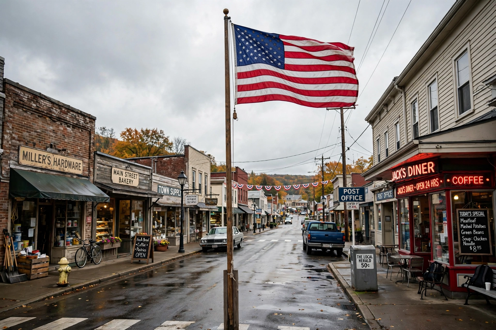

Top stories
Top stories from USA Today and its network

USA Today's homepage blends the national paper's own reporting with stories from the USA Today Network of local papers — short, visual, national in scope, with strong sports and life coverage.
News
The day's national headlines
Wire-style national news and network reporting.
Sports
Scores, columns and the big events
USA Today Sports is a major part of the brand.
Life
Entertainment, TV and celebrity
The Life section's entertainment mix.
Money
Personal finance and business briefs
Consumer-focused money coverage.